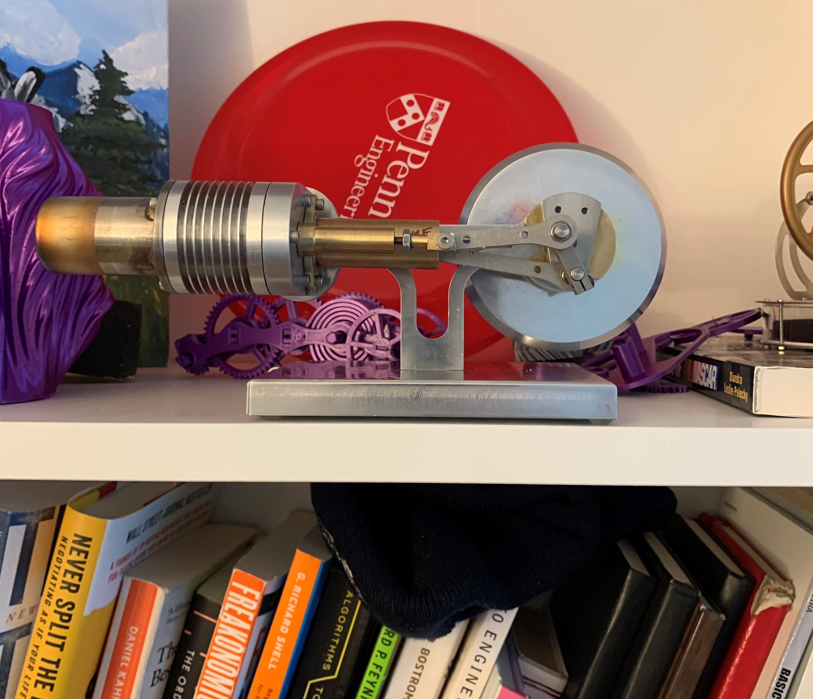
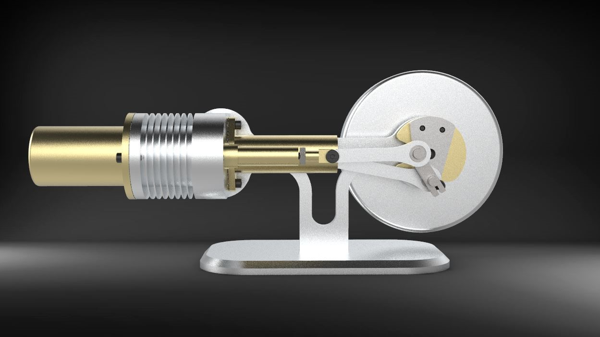
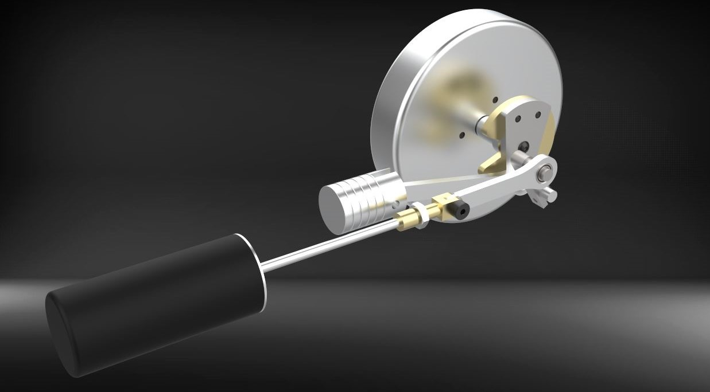

Gamma Type Stirling Engine
Overview
As part of MEAM 201: Machine Design and Manufacturing, I fully machined and designed custom components for a gamma type stirling engine. This required rapid prototyping (3D printing, laser cutting) and the use of machine shop equipment (CNC mill, lathe, bandsaw, ...). Engineering drawings were made of all the custom parts, using GD&T standards.
Design and Manufacturing Goals
The engine was designed and manufactured using the following criteria:
- Material Considerations: Aluminium, brass, and stainless steel were the available materials.
- Manufacturability: The engine was manufactured entirely using a CNC mill and a lathe, while prototypes were 3D printed and laser cut.
- Engine RPM: Proper engineering design had to ensure the engine could reach and sustain speeds of over 2000 rpm.
- Educational mindset: The engine served mainly an educational purpose, in terms of its machine design and manufacturing.
Design Overview
Gamma Type Engine
The engine is similar to a Beta type engine, with the only difference that displacer and piston sit in different cylinders (Gamma type). This allows for easier manufacturing, at the cost of reduced specific power.
Engineering Drawings
Engineering drawings were made for both the custom components and the fixtures, using GD&T principles and ASME standards.


Manufacturing
The engine was machined using CNC mills and manual lathes. The following pictures show the manufacturing of some of the engine components.


Testing
During testing, the engine could reach speeds close to 2000 rpm. The following gif shows the engine operating.